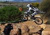

Mountain Bike Racing
Downhill Racing

Downhill mountain biking is practiced on steep, rough terrain that often features jumps, drops, rock gardens and other obstacles.
Downhill bikes feature heavy frames and front/rear suspension with over 20 cm of travel to absorb the impact of rocks and tree roots. In competitive races, a continuous course is defined on each side by a strip of tape. Riders have either a single or double attempt to reach the finish line as fast as possible. Riders must choose their line by deciding what can be traveled at the highest speed. If a rider leaves the course by crossing or breaking the tape they must return to the course at the point of exit.
Riders start at intervals and courses typically take two to five minutes to complete with winning margins being often less than a second.
Cross Country Racing
Cross-country racing emphasizes endurance above technical prowess, and races vary from 30 minutes to 24 hours. Many races are divided up into stages so can take several days. Races can be either point-to-point or lap-based. Short-track cross-country consists of many very short laps so as to be spectator-friendly.
Unlike downhill races, which are conducted in a time trial format, cross-country races often feature a mass start where riders are released in several large groups divided by age and/or ability. Races with very large fields that do not wish to stagger starts will sometimes employ a Le Mans start where racers begin by running to their bikes.